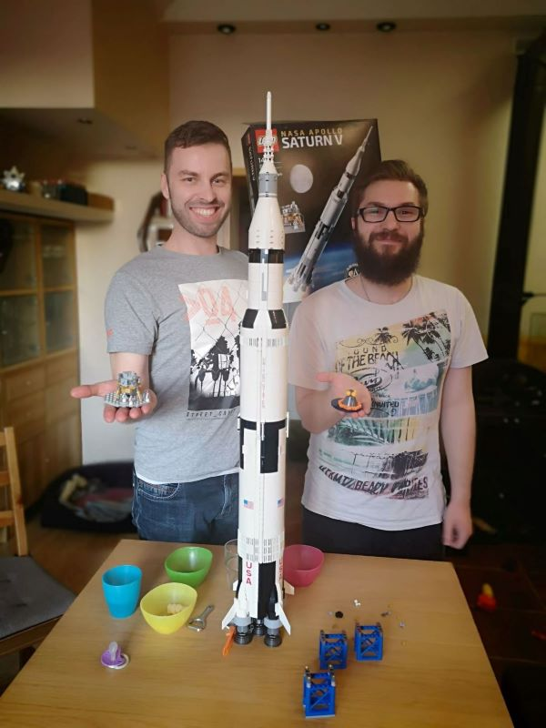

Saturn V jest jednym z najbardziej zaawansowanych technicznie tworów człowieka w historii.
Była to rakieta wysoka na 110 metrów, miała 10 metrów średnicy i była w stanie wynieść 118 ton ładunku na LEO.
Użyto w niej silniki F-1 oraz J-2. Podczas testów huk silników był słyszalny w promieniu 80 km.
Radziecką odpowiedzią na Saturna V była rakieta N1. Saturn V był wyższy, cięższy i wytwarzał większy ciąg podczas startu,
ale pierwszy stopień N1 miał większą średnicę. Rakieta N1 wykonała cztery testowe loty przed zakończeniem programu,
lecz wszystkie skończyły się niepowodzeniem. Pierwszy stopień Saturna V posiadał 5 silników F-1 o ogromnej mocy,
natomiast N1 wyposażona była w 30 małych silników. Podczas dwóch startów, Apollo 6 i Apollo 13 doszło do spadku mocy jednego z silników,
lecz komputer zdołał wyrównać ciąg. N1 była projektowana w pośpiechu i nigdy nie przetestowano silników jednocześnie,
co powodowało katastrofy podczas startów. Gdyby przetestowano pierwszy stopień N1 osobno,
można by uniknąć tych niedociągnięć.
Po prawej stronie znajduje się zdjęcie modelu rakiety Saturn V wykonany z klocków LEGO.